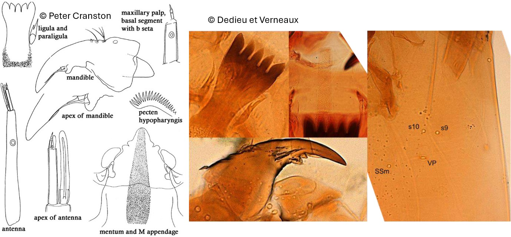

Telopelopia fascigera (Verneaux, 1970)

Indice Céphalique
0.55.
Ratio antennaire
4.
Mandibules
Mandibules minces et progressivement courbées. Dent apicale noirâtre, 2x aussi longue que la largeur basale. Dent interne arrondie. Mola élargie comme une grande dent arrondie.
Tubules anaux
Tubules anaux coniques.
Procercus
Procercus presque 3x plus long que large, avec 7 soies apicales.
Parapode postérieur
Griffes simples, brunes et claires ; Griffes les plus grosses avec de fines épines sur la marge interne et / ou externe.
Soies céphaliques ventrales
S10 latéral ou postéromédial S9 ; VP, S9 et S10 groupés. SSm postéromédial.
Ecologie
Les larves de Telopelopia vivent dans des milieux lotiques et lentiques mais à tendance à préférer la zone de potamon des plus grandes rivières. Le genre est eurytherme.
Espèces recensées en France
1 : Telopelopia fascigera.